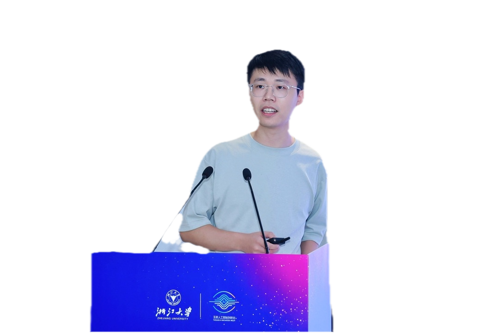
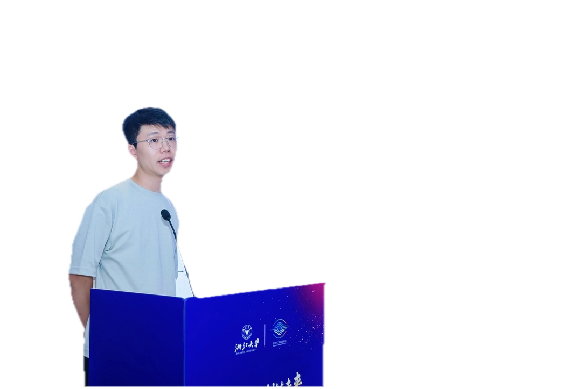
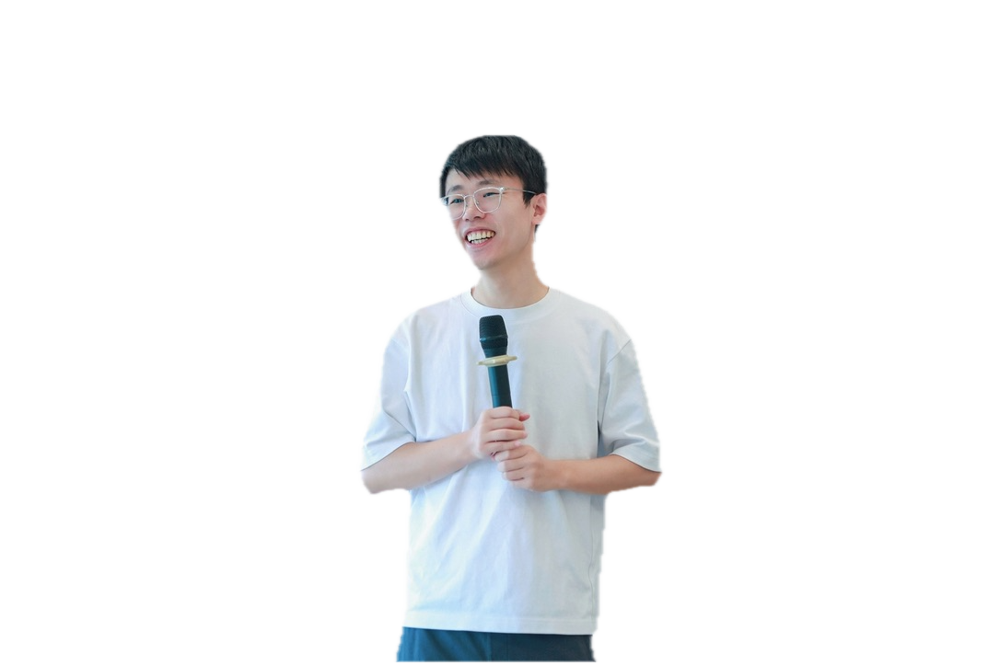
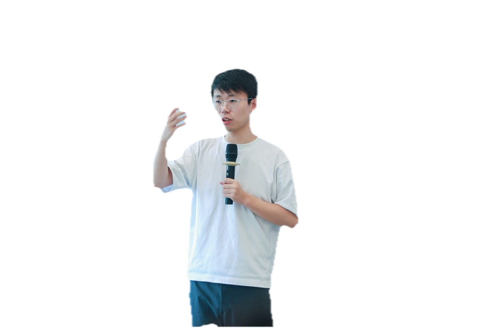
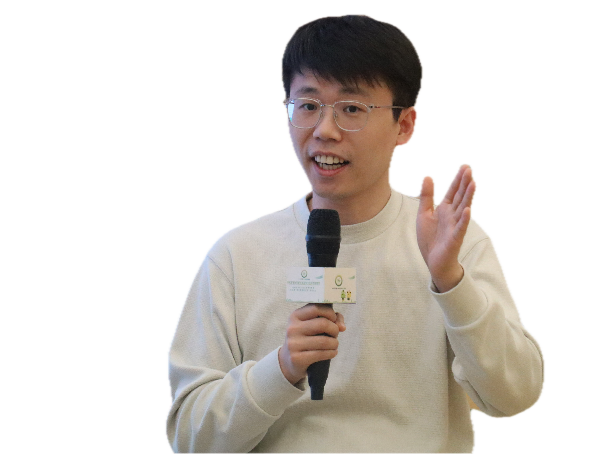
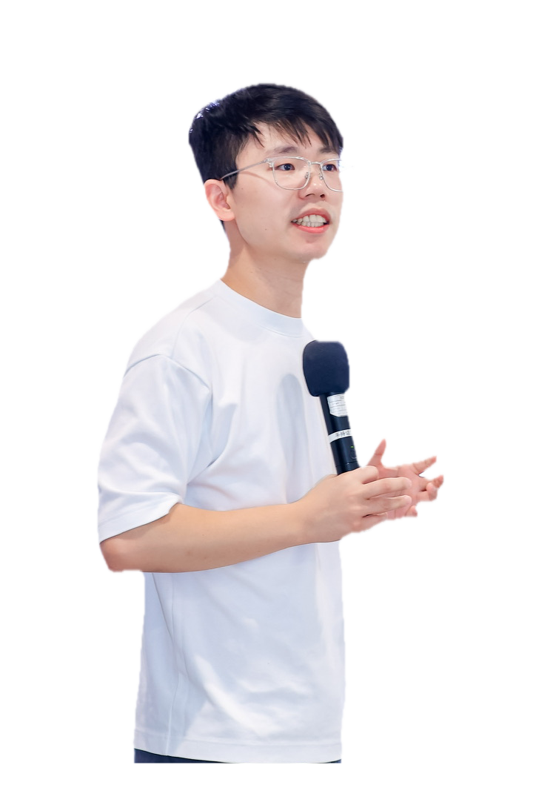
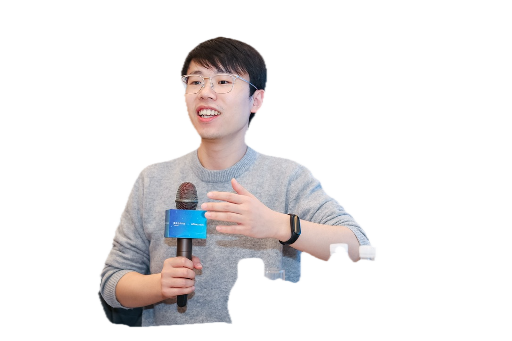
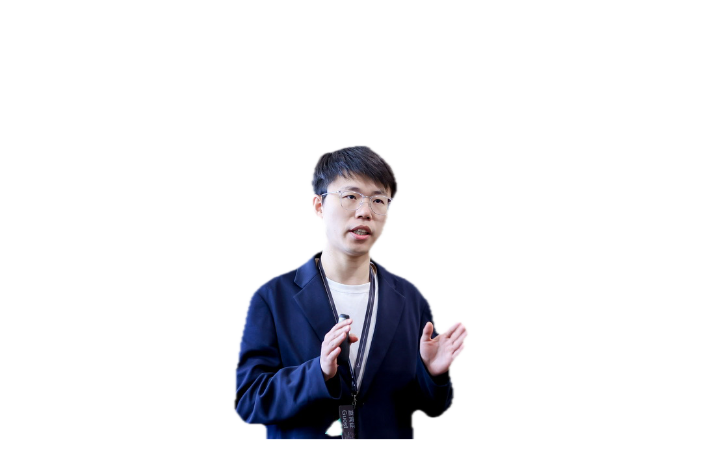

讲台侧面
透明PNG
持麦微笑
透明PNG
手势讲解
透明PNG
浅色毛衣举手
透明PNG
白T侧身讲解
透明PNG
灰毛衣座谈
透明PNG
四种真实照片抠图；原生成姿势卡已弃用。新增两套封面，合并之前三套，共五张实际构图样稿；另有真实课堂构图方案。
六姿势生成卡已因不像本人而弃用。以下保留原照人物与动作；讲台款保留遮挡，不补身体。细边缘需结合最终背景检查。








# 本人人物卡与海报结构规范 这套库以邱懿武本人为主。四张原始课堂照片是正式人物来源，六种生成姿势仅为候选。生成姿势不代表真实拍摄动作，必须确认脸部相似度、手指、眼镜和体态；未确认不得作为固定身份参考覆盖原图。 ## 一个好封面的六个层次 1. 内容承诺：本片到底解释什么；先填原句或时码，再写标题。 2. 主标题：一个可读的判断或问题，通常8–16字、2–3行完整短语；这不是硬性字数限制。条件、否定、主语不能为冲击力删掉。 3. 支持层：只选一个——补充问题、适用人群、方法范围或案例线索。主标题已是问题时，优先用限定或线索，不再叠一个重复问题。 4. 人物层：真人提供身份与表达状态；不是每张都必须有，姿势要服务内容，不能把平静讨论改成惊恐反应。 5. 主题层：一个物件、场景或关系解释标题；电脑、纸张、流程只是本次样例，换主题必须重新选。不能虚构结果、客户、数据与第三方人物。 6. 品牌层：可选署名/系列/Logo，仅作第三阅读层；关联学校与日期须核实。 ## 五种文案结构 - 判断式：完整判断＋适用范围。样例“AI项目要有跨部门试验田”；支持层“从小范围协作开始”。后一行是待来源验证的设计建议，不能当成讲者原话。 - 提问式：具体对象＋疑问；支持层提供讨论方向。样例“换了工具，效率没变？”＋“流程要不要重做？”。两句只适合确实讨论工具与流程的成片。 - 对照式：A与B的关键关系，不能伪造二选一。样例“智能密度 / 不是使用率”；支持层“AI承担了多少决策？”需成片支持。 - 方法式：任务＋方法/条件。只有来源真的给出三项，才可以写“先看三个条件”；不能为视觉凑数字。 - 案例式：具体对象＋反常现象。样例“淘宝店 / 为何整合工厂？”；支持层给时间或背景，而非未经证实的效果。 ## 六套构图版本 A 真人撞色：人物右下，主题物件左中，标题上方；两行粗体描边，蓝黄撞色。适合明确问题；已有实际样稿。 B 档案悬念：人物左中，证据/流程右侧，标题下半部；白黄红阶梯字。适合案例分析；已有实际样稿。 C 科技讲解：人物右下，结构物件左下，标题上方；白字青色重点。适合方法与流程；已有实际样稿。 D 中心人物环绕：人物居中，单一流程路径环绕，左右短标题错层，不遮脸；红底白黄字。用于“人处在组织关系中”的主题；本轮新样稿。 E 左文右人编辑部：左侧完整短句，右侧半身人物，下方只有一个主题物件；米白黑字加橙色重点。用于克制的知识讲解；本轮新样稿。 F 真课堂现场：直接采用课堂原图，以干净深色文字条提供标题；保留真实动作，不换脸、不造场景。先用原图，不宣称已制作新封面。 ## 版式约束与验收 先写观看顺序，例如“完整标题→人物→物件”。头部不和字抢同一块区域；视线或手势可指向主题，但不为匹配版式扭曲身体。标题通常占主要视觉重量，支持层明显小一级，品牌更小；实际以180px缩略图为准。建议从四周约5%的留白起步，根据字形与平台裁切调整，不能当通用平台规则。 字形设计主要用字重、宽窄、描边、投影、关键词色、受控倾斜。避免拉伸汉字、花纹覆盖笔画、多行全强调。先确认完整语义，再决定断行和重点词。 ## 可直接填的结构化设计单 clip_id / 成片版本： 依据原句或时码： 受众与观看理由： 文案结构（判断/提问/对照/方法/案例）： 主标题（准确文字与完整短语断行）： 支持层（可空，只选一层）： 人物卡ID / 来源（真实或生成候选） / 相似度确认状态： 主题物件与含义： 构图版本 / 观看顺序 / 留白： 字体重点与颜色： 可选品牌素材ID： 禁止新增的信息： 主图 / 实际提示词 / 缩略图 / 审核记录： ## 图像模型提示词骨架 制作3:4完整短视频封面；受众【】；本片依据【】。参考照片/人物卡【】，保留本人面貌与眼镜及身形；姿势为【真实动作/用户确认过的生成动作】。准确主标题「【】」，按【】断行；支持文字「【】」，不需要时省略。构图【A-F与明确位置】，观看顺序【】；一个主题物件【】表示【关系】，不是测量数据或纪实证据。字体【字重、描边、强调词】；背景【材质、色彩】，脸不被遮挡，边缘留白。只生成指定文字，不添加日期、学校、无依据结果。需要Logo则留位并使用品牌库原始标志，不重绘。输出后检查中文字、本人相似度、手指和180px阅读。

人物居中，流程路径环绕；红底，上方白黄两行大字，底部支持条
用途：3:4本人知识视频封面。 内容依据：【原句或时码】。 主标题：【完整判断或问题】，按完整短语断行。 支持层：【可选问题/范围/条件/案例线索，只选一个】，可省略。 人物：品牌库【真实照片或本人确认过的姿势卡ID】，保留身份特征。 构图：人物居中，流程路径环绕；红底，上方白黄两行大字，底部支持条。 物件：【能解释本片的单一对象或关系】；勿继承电脑、纸张样例。 字号、字重与关键词色服务观看顺序；脸不被字遮挡。只用指定文字，不编造背书、数据、日期。整图通过图像模型制作，保存实际输入与原图；检查本人相似度和180px缩略图。

左文右人，左下小物件；米白背景，黑色三行标题，橙色强调
用途：3:4本人知识视频封面。 内容依据：【原句或时码】。 主标题：【完整判断或问题】，按完整短语断行。 支持层：【可选问题/范围/条件/案例线索，只选一个】，可省略。 人物：品牌库【真实照片或本人确认过的姿势卡ID】，保留身份特征。 构图：左文右人，左下小物件；米白背景，黑色三行标题，橙色强调。 物件：【能解释本片的单一对象或关系】；勿继承电脑、纸张样例。 字号、字重与关键词色服务观看顺序；脸不被字遮挡。只用指定文字，不编造背书、数据、日期。整图通过图像模型制作，保存实际输入与原图；检查本人相似度和180px缩略图。

人物右下，工具物件左中；上半部黄白两行粗体，黑描边轻投影；蓝色背景
用途：3:4知识短视频封面。 内容依据：【本片原句或时码】。 人物：使用【品牌库中选定真实照片】，保留本人面貌、眼镜、发型及原动作；不要生成替身。 标题：准确生成【完整主标题】，按完整短语分2–3行。 补充问题：【可选问题】，视频内能回答；标题足够时省略。 构图与字体：人物右下，工具物件左中；上半部黄白两行粗体，黑描边轻投影；蓝色背景。 主题物件：【能解释主题的一个核心物件或结构】，不沿用电脑与纸张；不得增加假数据。 人物的脸不被文字和物件遮挡；抠图边缘自然。标题只强调一个关键词，可描边、投影或字重变化，避免扭曲字形。主体和文字均由图像模型生成。 边界：只用指定文字；不编造表情、行为、经历、第三方人物或背书。Logo如需要，按品牌库原图放置。保留原图与实际提示词，核对中文、本人相似度与180px缩略图。

人物左中，旧纸与流程路径右侧；下半部白黄红阶梯标题；深棕黑底
用途：3:4知识短视频封面。 内容依据：【本片原句或时码】。 人物：使用【品牌库中选定真实照片】，保留本人面貌、眼镜、发型及原动作；不要生成替身。 标题：准确生成【完整主标题】，按完整短语分2–3行。 补充问题：【可选问题】，视频内能回答；标题足够时省略。 构图与字体：人物左中，旧纸与流程路径右侧；下半部白黄红阶梯标题；深棕黑底。 主题物件：【能解释主题的一个核心物件或结构】，不沿用电脑与纸张；不得增加假数据。 人物的脸不被文字和物件遮挡；抠图边缘自然。标题只强调一个关键词，可描边、投影或字重变化，避免扭曲字形。主体和文字均由图像模型生成。 边界：只用指定文字；不编造表情、行为、经历、第三方人物或背书。Logo如需要，按品牌库原图放置。保留原图与实际提示词，核对中文、本人相似度与180px缩略图。

人物右下，流程物件左下；上方冷白标题与青色关键词，深蓝网格
用途：3:4知识短视频封面。 内容依据：【本片原句或时码】。 人物：使用【品牌库中选定真实照片】，保留本人面貌、眼镜、发型及原动作；不要生成替身。 标题：准确生成【完整主标题】，按完整短语分2–3行。 补充问题：【可选问题】，视频内能回答；标题足够时省略。 构图与字体：人物右下，流程物件左下；上方冷白标题与青色关键词，深蓝网格。 主题物件：【能解释主题的一个核心物件或结构】，不沿用电脑与纸张；不得增加假数据。 人物的脸不被文字和物件遮挡；抠图边缘自然。标题只强调一个关键词，可描边、投影或字重变化，避免扭曲字形。主体和文字均由图像模型生成。 边界：只用指定文字；不编造表情、行为、经历、第三方人物或背书。Logo如需要，按品牌库原图放置。保留原图与实际提示词，核对中文、本人相似度与180px缩略图。